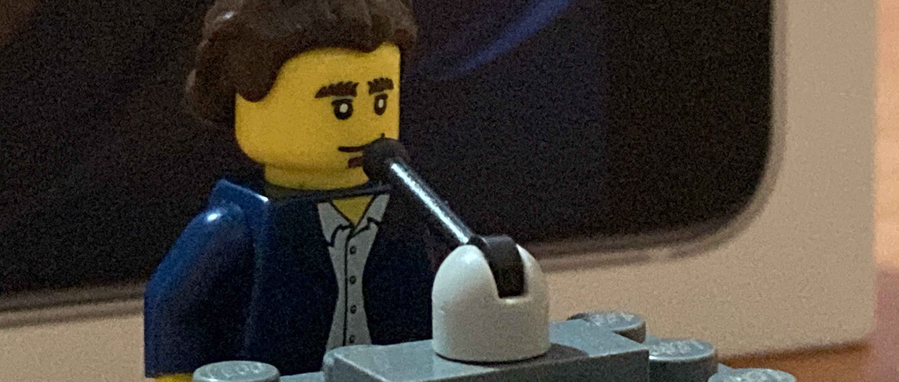
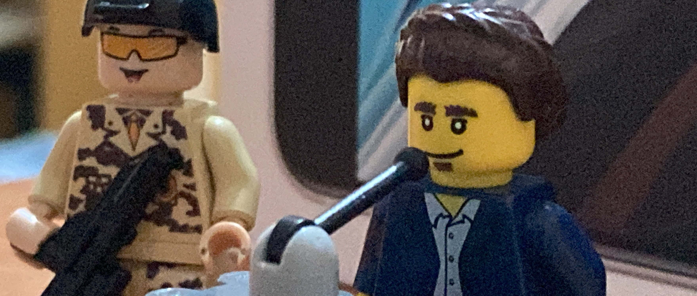
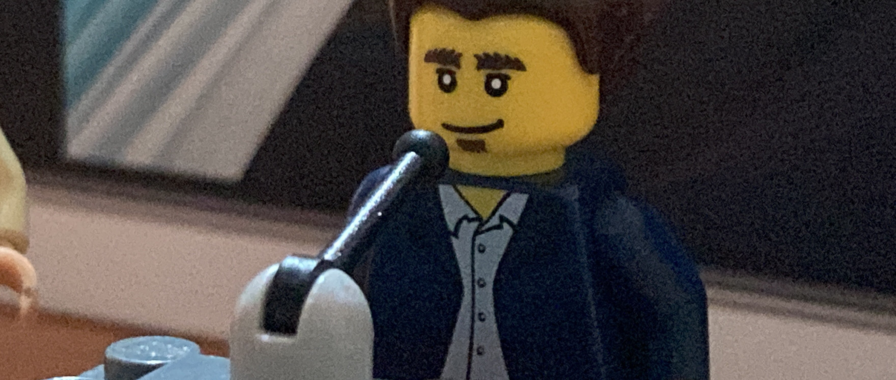
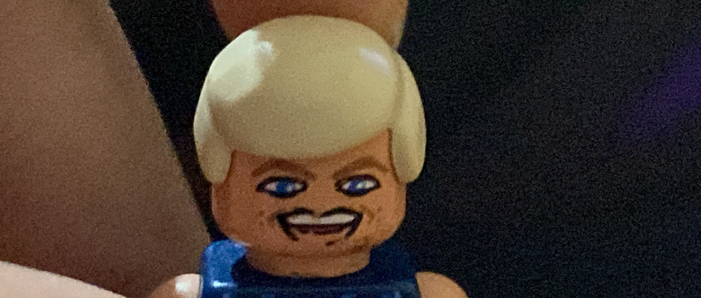
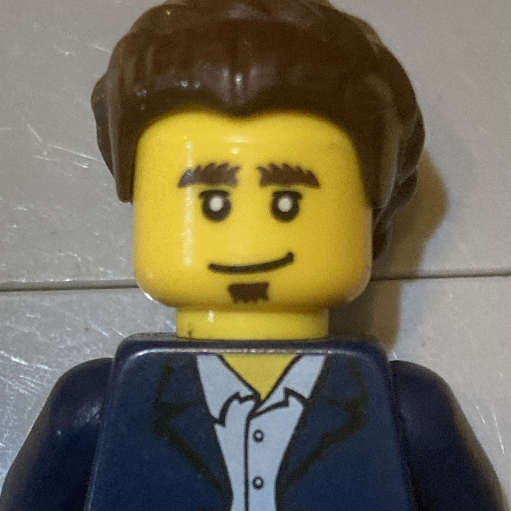

Jorgen Wurtz's Goodbye Speech




Hi, I am Jorgen Wurtz.

I am a politician, graduated major in pyschology, and proud father. I am most known for re-unifying Toyland and Jorgenberg, and being the former governor of Legoland.
My goal is to have the nation of Toyland be the best it can, and having the world be the best it can.
As the son of the former Supreme Leader of Jorgenberg and being the former supreme leader myself, I always was not accepted by my father due to the fact that I thought the Wurtz Regime was terrible and needed to be better. Of course, he didn't change the law for me, so I ended up being leader and re-unifying the two nations.
politics
As a politician, I have listed my political beliefs and goals for the world to see. I hope that you read this so that you can understand my position.
Go to pagecontact
If you wish to contact me, these are the ways in which you can do. Please read this before you contact me, as there are some of my public emails that I will not respond to.
Go to page